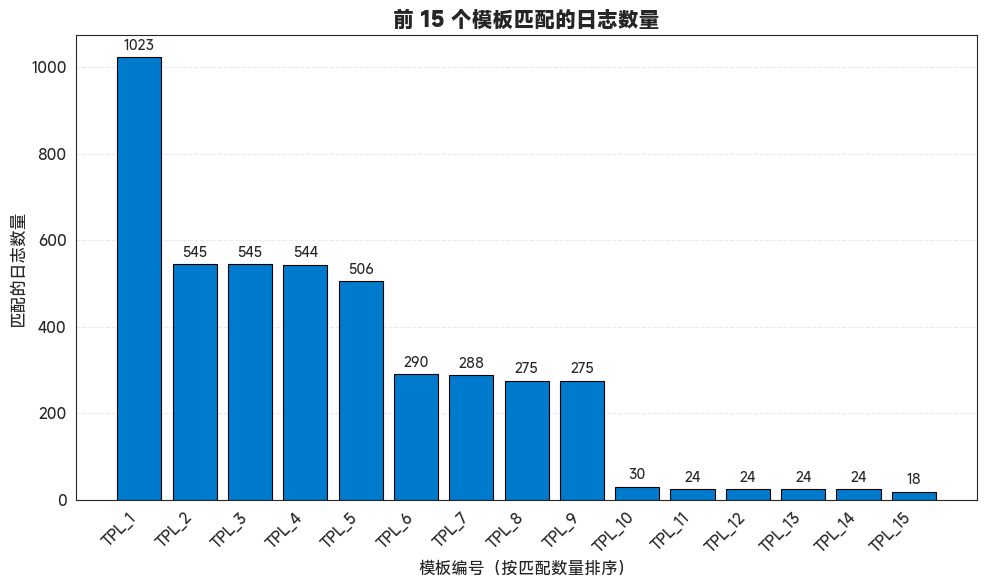

Drain3 log与模板匹配的实现
import osimport jsonimport refrom log_parser import parse_log_line
import matplotlib.pyplot as pltfrom skimage import ioimport seaborn as snsimport warningsimport numpy as npimport warningsimport seaborn as snsimport numpy as npimport matplotlib.pyplot as pltimport warningsfrom pylab import mpl, pltimport matplotlib.patches as mpatches
# best font and style settings for notebook warnings.filterwarnings('ignore')sns.set_style("white")mpl.rcParams['font.family'] = 'MiSans'
# 设置日志主目录log_root_path = r".\2025_5_8_log_all"log_extensions = (".log", ".txt", ".out")all_log_files = []
# 扫描所有日志文件路径for root, dirs, files in os.walk(log_root_path): for file in files: if file.lower().endswith(log_extensions): full_path = os.path.join(root, file) all_log_files.append(full_path)
print(f"共找到 {len(all_log_files)} 个日志文件")# print(all_log_files)
# 收集所有解析后的日志parsed_logs = []
for path in all_log_files: with open(path, 'r', encoding='utf-8', errors='ignore') as f: for line in f: parsed = parse_log_line(line, source_file=path) if parsed: parsed_logs.append(parsed)
print(f"成功解析出 {len(parsed_logs)} 条日志记录")共找到 24 个日志文件成功解析出 362034 条日志记录
单条log案例
parsed_logs[100]
{'source_file': '.\\2025_5_8_log_all\\dm日志及错误编码\\dm_RAC0_202504.log','timestamp': '00:00:54','level': 'INFO','content': '2025-04-30 00:00:54.621 [INFO] database P0000009826 T0000000000000011334 ckpt2_log_adjust: full_status: 160, ptx_reserved: 16'}
len(parsed_logs)
362034
import refrom drain3 import TemplateMinerfrom drain3.file_persistence import FilePersistencefrom drain3.template_miner_config import TemplateMinerConfigimport loggingfrom collections import defaultdictimport pandas as pd
# ✅ Step 1: 日志设置logging.basicConfig(level=logging.INFO, format="%(message)s")
# ✅ Step 2: 自定义参数配置from drain3.template_miner_config import TemplateMinerConfig
config = TemplateMinerConfig()config.load("drain3.ini") # 如果没有文件会自动加载内置默认配置config.drain_sim_th = 0.7 # 提高相似度容忍config.drain_max_depth = 5 # 增加树深config.drain_max_children = 100 # 增加匹配宽度
# ✅ Step 3: 初始化 Drain 模板挖掘器persistence = FilePersistence("drain3_state.json")template_miner = TemplateMiner(persistence, config)
# ✅ Step 4: 日志预处理函数def preprocess_log(log: str) -> str: log = re.sub(r"\d{4}-\d{2}-\d{2}( \d{2}:\d{2}:\d{2}(\.\d+)?)?", "<DATE>", log) log = re.sub(r"P\d{10}", "<P_ID>", log) log = re.sub(r"T\d{16}", "<T_ID>", log) log = re.sub(r"full_status:\s*\d+", "full_status: <STATUS>", log) log = re.sub(r"ptx_reserved:\s*\d+", "ptx_reserved: <RESERVED>", log) return log
# ✅ Step 5: 批量处理前1000条日志results = []template_stats = defaultdict(list)
for idx, log_item in enumerate(parsed_logs[:5000]): log_content_raw = log_item.get('content', '').strip() if not log_content_raw: continue
log_content = preprocess_log(log_content_raw)
result = template_miner.add_log_message(log_content)
if result is not None: template = result.get('template_mined') variables = result.get('parameter_list', [])
if template: results.append({ 'log_id': idx, 'template': template, 'variables': variables, 'original': log_content_raw }) template_stats[template].append(idx)
# ✅ Step 6: 打印示例结果print("\n🔍 示例模板匹配结果 (前5条):")for r in results[:5]: print(f"\n[Log ID] {r['log_id']}") print("Original :", r['original']) print("Template :", r['template']) print("Variables:", r['variables'])config file not found: drain3.iniStarting Drain3 template minerChecking for saved stateRestored 2184 clusters built from 365782 messages
🔍 示例模板匹配结果 (前5条):[Log ID] 0Original : 2025-04-30 00:00:01.319 [WARNING] database P0000009826 T0000000000000034013 socket_err_should_retry errno:38Template : <DATE> [WARNING] database <P_ID> <*> socket_err_should_retry <*>Variables: [][Log ID] 1Original : 2025-04-30 00:00:03.926 [INFO] database P0000009826 T0000000000000011404 checkpoint requested by CKPT_DIRTY_PAGES, rlog free space[21399052288], used space[75776000]Template : <DATE> [INFO] database <P_ID> <*> checkpoint requested by <*> rlog free <*> used <*>Variables: [][Log ID] 2Original : 2025-04-30 00:00:03.926 [INFO] database P0000009826 T0000000000000011404 checkpoint generate by dirty_pages[10946] > ckpt_dirty_pages[10000]Template : <DATE> [INFO] database <P_ID> <*> checkpoint generate by <*> > <*>Variables: [][Log ID] 3Original : 2025-04-30 00:00:03.926 [INFO] database P0000009826 T0000000000000011334 checkpoint begin, used_space[75776000], free_space[21399052288]...Template : <DATE> [INFO] database <P_ID> <T_ID>334 checkpoint begin, <*> <*>Variables: [][Log ID] 4Original : 2025-04-30 00:00:07.718 [WARNING] database P0000009826 T0000000000000033207 socket_err_should_retry errno:38Template : <DATE> [WARNING] database <P_ID> <*> socket_err_should_retry <*>Variables: []
len(results)
5000
# ✅ Step 7: 模板统计print("\n📊 模板汇总统计:")template_df = []for template, ids in sorted(template_stats.items(), key=lambda x: -len(x[1]))[:3]: print(f"\nTemplate : {template}") print(f"Count : {len(ids)}") print(f"Log IDs : {ids[:5]}{'...' if len(ids) > 5 else ''}")
for template, ids in sorted(template_stats.items(), key=lambda x: -len(x[1]))[:]: template_df.append([template, len(ids), ids])📊 模板汇总统计:Template : <DATE> [INFO] database <P_ID> <T_ID>334 ckpt2_request_far_ep_flush dest_seq:1 <*>Count : 1023Log IDs : [7, 8, 14, 15, 21]...Template : <DATE> [INFO] database <P_ID> <*> checkpoint requested by <*> rlog free <*> used <*>Count : 545Log IDs : [1, 12, 19, 26, 34]...Template : <DATE> [INFO] database <P_ID> <T_ID>334 checkpoint begin, <*> <*>Count : 545Log IDs : [3, 13, 20, 28, 36]...
template_df = pd.DataFrame(template_df, columns=['模板', '与模板匹配的log数量', '与模板log id的列表'])template_df['累计'] = template_df['与模板匹配的log数量'].cumsum()template_df['累计百分比'] = template_df['累计'] / len(results)template_df
| 模板 | 与模板匹配的log数量 | 与模板log id的列表 | 累计 | 累计百分比 | |
|---|---|---|---|---|---|
| 0 | <DATE> [INFO] database <P_ID> <T_ID>334 ckpt2_... | 1023 | [7, 8, 14, 15, 21, 22, 29, 30, 37, 38, 45, 46,... | 1023 | 0.2046 |
| 1 | <DATE> [INFO] database <P_ID> <*> checkpoint r... | 545 | [1, 12, 19, 26, 34, 42, 50, 59, 70, 79, 95, 10... | 1568 | 0.3136 |
| 2 | <DATE> [INFO] database <P_ID> <T_ID>334 checkp... | 545 | [3, 13, 20, 28, 36, 43, 52, 61, 72, 81, 97, 10... | 2113 | 0.4226 |
| 3 | <DATE> [INFO] database <P_ID> <T_ID>334 checkp... | 544 | [11, 18, 25, 33, 41, 49, 58, 66, 78, 88, 102, ... | 2657 | 0.5314 |
| 4 | <DATE> [INFO] database <P_ID> <*> ckpt2_log_ad... | 506 | [9, 16, 23, 31, 39, 47, 56, 64, 76, 86, 100, 1... | 3163 | 0.6326 |
| ... | ... | ... | ... | ... | ... |
| 524 | <DATE> [INFO] database <P_ID> <T_ID>334 ckpt2_... | 1 | [4962] | 4996 | 0.9992 |
| 525 | <DATE> [INFO] database <P_ID> <T_ID>334 ckpt2_... | 1 | [4969] | 4997 | 0.9994 |
| 526 | <DATE> [INFO] database <P_ID> <T_ID>334 ckpt2_... | 1 | [4976] | 4998 | 0.9996 |
| 527 | <DATE> [INFO] database <P_ID> <T_ID>334 ckpt2_... | 1 | [4985] | 4999 | 0.9998 |
| 528 | <DATE> [INFO] database <P_ID> <T_ID>334 ckpt2_... | 1 | [4995] | 5000 | 1.0000 |
529 rows × 5 columns
import matplotlib.pyplot as plt
# 设置样式统一颜色与字体plt.rcParams.update({'font.size': 11, 'axes.titlesize': 15, 'axes.labelsize': 12})
# ✅ 设置只显示前 N 个模板N = 15top_templates = template_df.sort_values(by='与模板匹配的log数量', ascending=False).head(N)
plt.figure(figsize=(10, 6))bars = plt.bar( range(N), top_templates['与模板匹配的log数量'], color='#007acc', edgecolor='black', linewidth=0.8)
# ✅ 模板索引（编号）作为 x 轴x_labels = [f'TPL_{i + 1}' for i in range(N)]plt.xticks(range(N), x_labels, rotation=45, ha='right')
plt.ylabel("匹配的日志数量")plt.xlabel("模板编号（按匹配数量排序）")plt.title(f"前 {N} 个模板匹配的日志数量", fontweight='bold')
# ✅ 添加柱顶数字for i, count in enumerate(top_templates['与模板匹配的log数量']): plt.text(i, count + max(top_templates['与模板匹配的log数量']) * 0.01, str(count), ha='center', va='bottom', fontsize=10)
plt.grid(axis='y', linestyle='--', alpha=0.4)plt.tight_layout()plt.show()

plt.figure(figsize=(10, 6))template_df['累计百分比'].plot(kind='line', marker='o', color='#007acc', linewidth=2, markersize=6)
plt.title("模板累计覆盖率", fontweight='bold')plt.xlabel("模板编号（索引）")plt.ylabel("累计百分比")
# ✅ 设置连续 x 轴刻度 & 限制范围plt.xticks(range(11))plt.xlim(0, 10)
# ✅ 百分比显示格式from matplotlib.ticker import FuncFormatter
plt.gca().yaxis.set_major_formatter(FuncFormatter(lambda y, _: f'{y:.0%}'))
# ✅ 去掉边框，统一风格for spine in ['top', 'right']: plt.gca().spines[spine].set_visible(False)
plt.grid(True, linestyle='--', alpha=0.4)plt.tight_layout()plt.show()

# ✅ Step 8: 导出 CSV（可选）df = pd.DataFrame(results)df
| log_id | template | variables | original | |
|---|---|---|---|---|
| 0 | 0 | <DATE> [WARNING] database <P_ID> <*> socket_er... | [] | 2025-04-30 00:00:01.319 [WARNING] database P00... |
| 1 | 1 | <DATE> [INFO] database <P_ID> <*> checkpoint r... | [] | 2025-04-30 00:00:03.926 [INFO] database P00000... |
| 2 | 2 | <DATE> [INFO] database <P_ID> <*> checkpoint g... | [] | 2025-04-30 00:00:03.926 [INFO] database P00000... |
| 3 | 3 | <DATE> [INFO] database <P_ID> <T_ID>334 checkp... | [] | 2025-04-30 00:00:03.926 [INFO] database P00000... |
| 4 | 4 | <DATE> [WARNING] database <P_ID> <*> socket_er... | [] | 2025-04-30 00:00:07.718 [WARNING] database P00... |
| ... | ... | ... | ... | ... |
| 4995 | 4995 | <DATE> [INFO] database <P_ID> <T_ID>334 ckpt2_... | [] | 2025-04-30 00:26:29.630 [INFO] database P00000... |
| 4996 | 4996 | <DATE> [INFO] database <P_ID> <T_ID>334 checkp... | [] | 2025-04-30 00:26:29.631 [INFO] database P00000... |
| 4997 | 4997 | <DATE> [INFO] database <P_ID> <*> checkpoint r... | [] | 2025-04-30 00:26:29.631 [INFO] database P00000... |
| 4998 | 4998 | <DATE> [INFO] database <P_ID> <T_ID>334 checkp... | [] | 2025-04-30 00:26:29.631 [INFO] database P00000... |
| 4999 | 4999 | <DATE> [INFO] database <P_ID> <T_ID>334 ckpt2_... | [] | 2025-04-30 00:26:29.773 [INFO] database P00000... |
5000 rows × 4 columns
正则类型匹配，提取变量
import re
template = "<DATE> [WARNING] database <P_ID> <*> socket_err_should_retry <*>"original = "2025-04-30 00:00:01.319 [WARNING] database P0000009826 T0000000000000034013 socket_err_should_retry errno:38"
def extract_variables_from_template(template, original): # Step 1: Replace <xxx> and <*> with a temporary placeholder for variables # We use a unique placeholder that won't conflict with literal characters temp_placeholder = "__VAR_PLACEHOLDER__" normalized = re.sub(r'<[^>]+>', temp_placeholder, template)
# Step 2: Escape the entire normalized string for regex # This turns literal characters into their escaped form (e.g., [ into \[) pattern = re.escape(normalized)
# Step 3: Convert our temporary placeholder back to the regex capturing group # Ensure this happens *after* re.escape, so we target the escaped placeholder pattern = pattern.replace(re.escape(temp_placeholder), r'(.+?)')
# Step 4: Replace single escaped spaces with \s+ for multiple spaces pattern = pattern.replace(r'\ ', r'\s+')
# # Debugging: Print the final pattern to inspect it # print(f"Generated Regex Pattern: {pattern}")
match = re.match(pattern, original) return list(match.groups()) if match else []
# Testvariables = extract_variables_from_template(template, original)print("✅ Extracted variables:", variables)# 应用到整个 DataFrame 中df['variables'] = df.apply(lambda row: extract_variables_from_template(row['template'], row['original']), axis=1)df✅ Extracted variables: ['2025-04-30 00:00:01.319', 'P0000009826', 'T0000000000000034013', 'e']
| log_id | template | variables | original | |
|---|---|---|---|---|
| 0 | 0 | <DATE> [WARNING] database <P_ID> <*> socket_er... | [2025-04-30 00:00:01.319, P0000009826, T000000... | 2025-04-30 00:00:01.319 [WARNING] database P00... |
| 1 | 1 | <DATE> [INFO] database <P_ID> <*> checkpoint r... | [2025-04-30 00:00:03.926, P0000009826, T000000... | 2025-04-30 00:00:03.926 [INFO] database P00000... |
| 2 | 2 | <DATE> [INFO] database <P_ID> <*> checkpoint g... | [2025-04-30 00:00:03.926, P0000009826, T000000... | 2025-04-30 00:00:03.926 [INFO] database P00000... |
| 3 | 3 | <DATE> [INFO] database <P_ID> <T_ID>334 checkp... | [2025-04-30 00:00:03.926, P0000009826, T000000... | 2025-04-30 00:00:03.926 [INFO] database P00000... |
| 4 | 4 | <DATE> [WARNING] database <P_ID> <*> socket_er... | [2025-04-30 00:00:07.718, P0000009826, T000000... | 2025-04-30 00:00:07.718 [WARNING] database P00... |
| ... | ... | ... | ... | ... |
| 4995 | 4995 | <DATE> [INFO] database <P_ID> <T_ID>334 ckpt2_... | [2025-04-30 00:26:29.630, P0000009826, T000000... | 2025-04-30 00:26:29.630 [INFO] database P00000... |
| 4996 | 4996 | <DATE> [INFO] database <P_ID> <T_ID>334 checkp... | [2025-04-30 00:26:29.631, P0000009826, T000000... | 2025-04-30 00:26:29.631 [INFO] database P00000... |
| 4997 | 4997 | <DATE> [INFO] database <P_ID> <*> checkpoint r... | [2025-04-30 00:26:29.631, P0000009826, T000000... | 2025-04-30 00:26:29.631 [INFO] database P00000... |
| 4998 | 4998 | <DATE> [INFO] database <P_ID> <T_ID>334 checkp... | [2025-04-30 00:26:29.631, P0000009826, T000000... | 2025-04-30 00:26:29.631 [INFO] database P00000... |
| 4999 | 4999 | <DATE> [INFO] database <P_ID> <T_ID>334 ckpt2_... | [2025-04-30 00:26:29.773, P0000009826, T000000... | 2025-04-30 00:26:29.773 [INFO] database P00000... |
5000 rows × 4 columns

row = df.iloc[2000]
print("🧩 模板 Template:")print(row["template"])print("\n📦 提取出的变量 Variables:")print(row["variables"] if row["variables"] else "（无）")print("\n📝 原始日志 Original Log:")print(row["original"])
🧩 模板 Template:<DATE> [INFO] database <P_ID> <T_ID>334 ckpt2_request_far_ep_flush dest_seq:1 <*>📦 提取出的变量 Variables:['2025-04-30 00:09:33.386', 'P0000009826', 'T0000000000000011', 'b']📝 原始日志 Original Log:2025-04-30 00:09:33.386 [INFO] database P0000009826 T0000000000000011334 ckpt2_request_far_ep_flush dest_seq:1 begin
df.to_csv(f"drain3_parsed_logs_{len(results)}.csv", index=False)print(f"\n✅ 解析结果已保存至:drain3_parsed_logs_{len(results)}.csv")✅ 解析结果已保存至:drain3_parsed_logs_5000.csv
!jupyter nbconvert --to html log_parsing_drain.ipynb!jupyter nbconvert --to markdown log_parsing_drain.ipynb